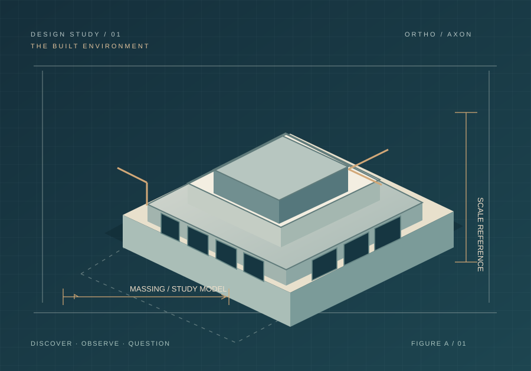

Inside an Architecture Studio.
An illustrative discovery visit showing how a focused, professionally hosted learning experience could work. No firm or date has been confirmed.

PROPOSED PROGRAM MODEL / NOT AN ACTUAL HOST OR EVENTFrom first sketch to finished space.
Participants would learn how professionals turn a design question into a workable solution—and how the daily profession differs from expectations.
- Illustrative group
- 4–6 interested young women
- Possible duration
- Approximately 90 minutes
- Potential setting
- Studio or approved virtual walkthrough
- Learning outcome
- Explain three stages of design and identify a relevant next career step
What an afternoon in the studio could involve.
Each component is designed to answer a participant's real career question, not simply provide a tour of impressive facilities.
Meet the team
Understand roles, specializations, and the firm's professional environment.
Follow a design
Review approved sketches, models, or anonymized examples of how decisions evolve.
Try a design question
Explore a simple noncommercial educational scenario and discuss trade-offs.
Ask what matters
Question the host about work, training, and skills; leave with a specific next action.
A manageable visit for the host team.
We would define the subject matter, group size, permissions, logistics, and educational objective together. A visit is never assumed until all parties approve its scope.
Discuss an opportunityProfessional access
An authorized host and only materials cleared for demonstration.
Clear boundaries
Agreed site rules, confidentiality, permissions, accessibility, and risk arrangements.
Prepared participants
Shared expectations and learning questions before the experience.